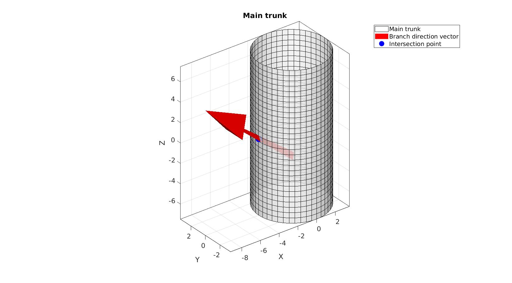
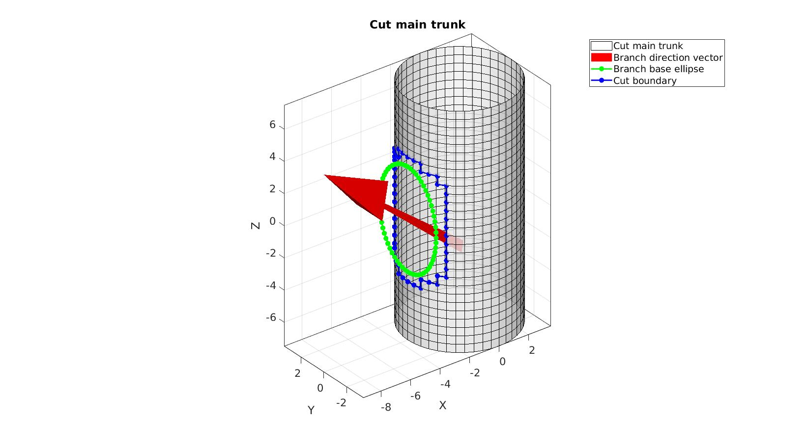
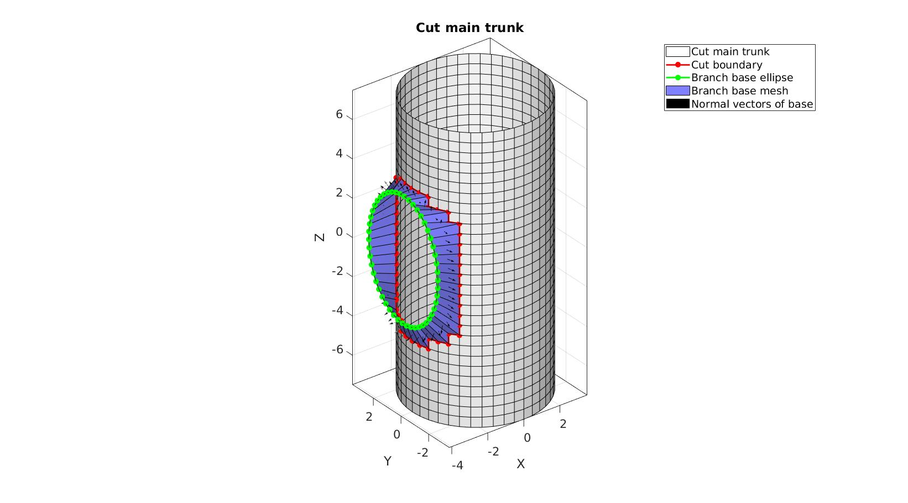
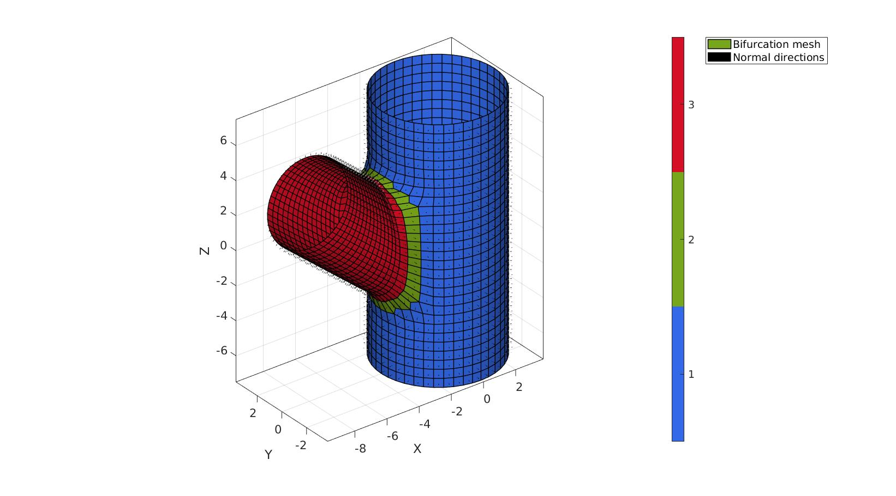
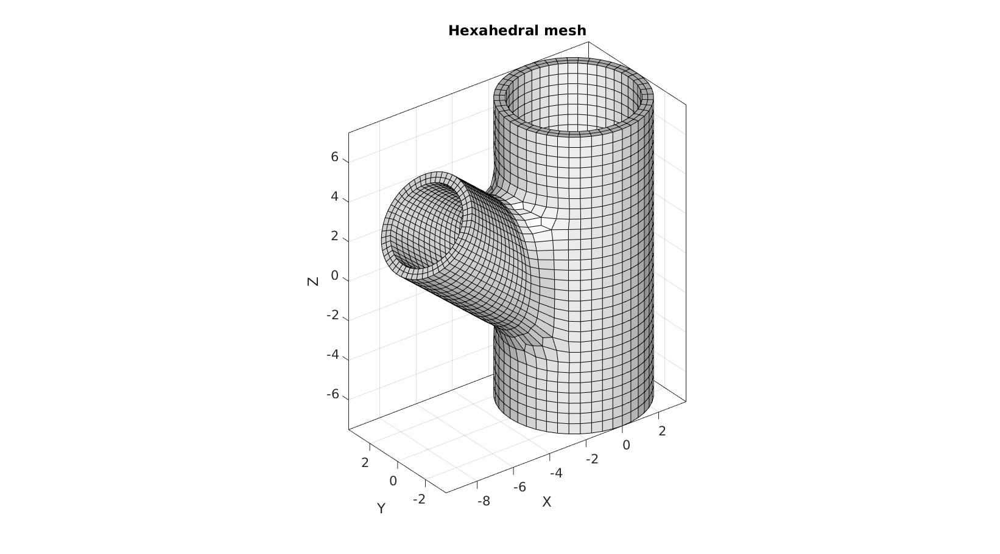
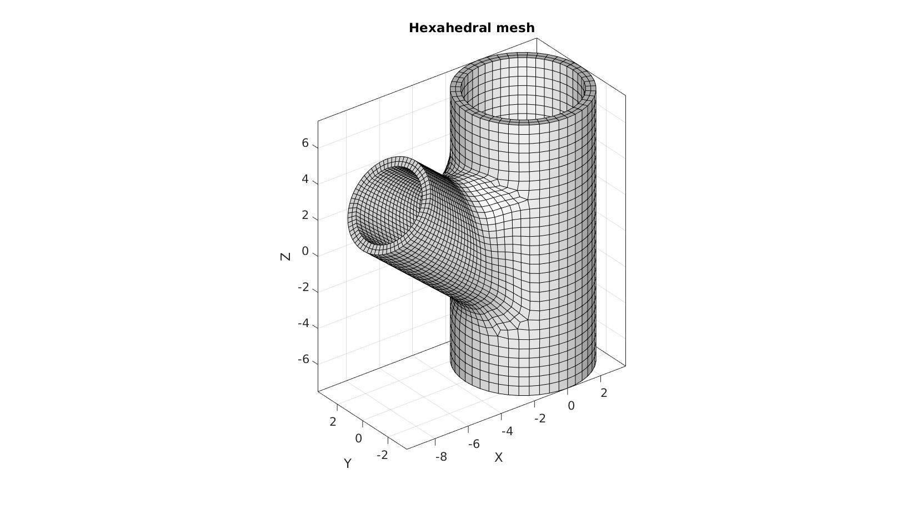

DEMO_mesh_bifurcation_cut_loft_branch
This demo shows how one can use logic operations to cut meshes and to extrude features from meshes. Here a bifurcated vessel is created by cutting a hole in a particular direction and by extruding the side-branch from this hole. The initial surface mesh is then thickened to produce a hexahedral mesh.
Contents
- Control parameters
- Derived parameters
- Create example geometry
- Ray trace branch direction onto trunk to get branch centre point
- Cut main trunk using side branch ellipse
- Define bezier start and end vector directions
- Create raw bezier surface
- Loft and merge side branch
- Constrained smoothing of branch base region
- Thicken surface mesh to hexahedra
clear; close all; clc;
Plot Settings
fontSize=15; faceAlpha=0.8; edgeColor=0.*ones(1,3); lineWidth1=2; markerSize1=50; markerSize2=25;
Control parameters
pointSpacing=0.5; trunkRadiusInner=3; %Radius trunkLength=15; %Length branchRadiusInner=2; branchLength=6; branchAngle=50; cutDist=0.5; branchBaseOffset=cutDist+pointSpacing; wallThickness=0.5; numElementsWall=2; bezierTangency=0.5; numSmootIterations=25; smoothMethod='HC'; smoothIncludeSteps=2;
Derived parameters
%Get outer radii trunkRadiusOuter=trunkRadiusInner+wallThickness; branchRadiusOuter=branchRadiusInner+wallThickness; %Have branch exit in middle V_branch_origin=[0 0 -trunkRadiusOuter*tand(90-branchAngle)];
Create example geometry
%Guide curves and branches R=euler2DCM([0 (branchAngle/180)*pi 0]); R_90=euler2DCM([0 (90/180)*pi 0]); %Main trunk Vm=evenlySpaceCurve([0 0 -trunkLength/2; 0 0 trunkLength/2],pointSpacing); N_branch_dir=[0 0 1]*R; t=linspace(0,2*pi,ceil((2*pi*trunkRadiusOuter)./pointSpacing)+1)'; t=t(1:end-1); Vc1=trunkRadiusOuter.*[cos(t) sin(t) zeros(size(t))]; Vc2_trunk=Vc1+Vm(end,:); Vc1_trunk=Vc1+Vm(1,:);
n1=vecnormalize(Vm(2,:)-Vm(1,:)); n2=vecnormalize(Vm(end,:)-Vm(end-1,:)); [Ft,Vt,Ct]=sweepLoft(Vc1_trunk,Vc2_trunk,n1,n2,Vm,[],0,0);
Ray trace branch direction onto trunk to get branch centre point
optionStruct.tolEps = 1e-6; optionStruct.triSide = -1; optionStruct.rayType = 'ray'; optionStruct.exclusionType = 'inclusive'; optionStruct.paired = 0; P=triSurfRayTrace(V_branch_origin,N_branch_dir,Ft,Vt,optionStruct);
Visualization250
cFigure; hold on; title('Main trunk'); hp1=gpatch(Ft,Vt,'w','k',faceAlpha); hp2=quiverVec(V_branch_origin,N_branch_dir,branchLength*2,'r'); hp3=plotV(P,'b.','markerSize',markerSize1); legend([hp1 hp2 hp3],{'Main trunk','Branch direction vector','Intersection point'}) axisGeom(gca,fontSize); camlight headlight; gdrawnow;
Cut main trunk using side branch ellipse
t=linspace(0,2*pi,2*ceil((2*pi*branchRadiusOuter)./pointSpacing)+1)'; t=t(1:end-1); b=branchRadiusOuter./cosd(90-branchAngle); V_cut_ellipse=[b*cos(t) branchRadiusOuter.*sin(t) zeros(size(t))]; V_cut_ellipse=V_cut_ellipse*R_90+P; [~,indRemove]=minDist(V_cut_ellipse,Vt); indRemove=unique(indRemove); logicFacesSelect=~any(ismember(Ft,indRemove),2); Ft_precut=Ft(logicFacesSelect,:); clear optionStruct optionStruct.outputType='label'; [G,~,groupSize]=tesgroup(Ft_precut,optionStruct); [~,indLargestGroup]=max(groupSize); Ft_cut=Ft_precut(G==indLargestGroup,:); Et_boundary_cut=patchBoundary(Ft_cut); Et_boundary=patchBoundary(Ft); Et_cut_boundary=Et_boundary_cut(~any(ismember(Et_boundary_cut,Et_boundary),2),:); indCutCurve=edgeListToCurve(Et_cut_boundary); clear optionStruct optionStruct.numSeeds=numel(indCutCurve); %Number of seeds optionStruct.waitBarOn=0; %Turn on/off waitbar Dt_cut=meshDistMarch(Ft_cut,Vt,indCutCurve,optionStruct); logicVerticesFar=Dt_cut>cutDist; logicKeep=all(logicVerticesFar(Ft_cut),2); Ft_cut=Ft_cut(logicKeep,:); Et_boundary_cut=patchBoundary(Ft_cut); Et_boundary=patchBoundary(Ft); Et_cut_boundary=Et_boundary_cut(~any(ismember(Et_boundary_cut,Et_boundary),2),:); indCutCurve=edgeListToCurve(Et_cut_boundary); V_branch_curve_trunk=Vt(indCutCurve(1:end-1),:); [~,~,Nt]=patchNormal(Ft_cut,Vt); N_branch_curve_trunk=Nt(indCutCurve(1:end-1),:);
Visualization
cFigure; hold on; title('Cut main trunk'); hp1=gpatch(Ft_cut,Vt,Dt_cut,'k',faceAlpha); hp2=quiverVec(V_branch_origin,N_branch_dir,branchLength*2,'r'); hp3=plotV(V_cut_ellipse,'g.-','markerSize',markerSize2,'LineWidth',lineWidth1); hp4=plotV(V_branch_curve_trunk,'b.-','markerSize',markerSize2,'LineWidth',lineWidth1); legend([hp1 hp2 hp3 hp4],{'Cut main trunk','Branch direction vector','Branch base ellipse','Cut boundary'}) axisGeom(gca,fontSize); camlight headlight; gdrawnow;
Define bezier start and end vector directions
[~,indNearest]=minDist(V_branch_curve_trunk(1,:),V_cut_ellipse); dt=linspace(2*pi,0,size(V_branch_curve_trunk,1)+1)'; dt=dt(1:end-1); dt=dt+t(indNearest); V_cut_ellipse=[b*cos(dt) branchRadiusOuter.*sin(dt) zeros(size(dt))]; V_branch_curve_ellipse1=V_cut_ellipse*R_90+P+N_branch_dir.*(branchBaseOffset/cosd(90-branchAngle)); d1=sum(sqrt(sum((V_branch_curve_ellipse1-V_branch_curve_trunk).^2,2))); d2=sum(sqrt(sum((flipud(V_branch_curve_ellipse1)-V_branch_curve_trunk).^2,2))); if d2<d1 V_branch_curve_ellipse1=flipud(V_branch_curve_ellipse1); dt=flipud(dt); end C1=vecnormalize(V_branch_curve_trunk-V_branch_curve_ellipse1); D1=vecnormalize(cross(C1,N_branch_curve_trunk)); M1=vecnormalize(cross(D1,N_branch_curve_trunk)); M2=N_branch_dir(ones(size(M1,1),1),:);
Visualization
cFigure; hold on; title('Cut main trunk'); hp1=gpatch(Ft_cut,Vt,'w','k',1); hp2=plotV(V_branch_curve_trunk,'r.-','markerSize',markerSize2,'LineWidth',lineWidth1); hp3=plotV(V_branch_curve_ellipse1,'g.-','markerSize',markerSize2,'LineWidth',lineWidth1); hp4=quiverVec(V_branch_curve_trunk,M1,branchRadiusOuter/2,'r'); hp5=quiverVec(V_branch_curve_ellipse1,M2,branchRadiusOuter/2,'g'); legend([hp1 hp2 hp3 hp4 hp5],{'Cut main trunk','Cut boundary','Branch base ellipse','Branch base dir.','Branch vessel dir.'}) axisGeom(gca,fontSize); camlight headlight; gdrawnow;
Create raw bezier surface
[Fb1,Vb1,X,Y,Z]=bezierLoft(V_branch_curve_trunk,V_branch_curve_ellipse1,M1,M2,pointSpacing,bezierTangency);
Visualization
cFigure; hold on; title('Cut main trunk'); hp1=gpatch(Ft_cut,Vt,'w','k',1); hp2=plotV(V_branch_curve_trunk,'r.-','markerSize',markerSize2,'LineWidth',lineWidth1); hp3=plotV(V_branch_curve_ellipse1,'g.-','markerSize',markerSize2,'LineWidth',lineWidth1); hp4=gpatch(Fb1,Vb1,'bw','k',1,0.5); for q=1:size(X,2) hp5=plotV([X(:,q) Y(:,q) Z(:,q)],'k-','LineWidth',4); end legend([hp1 hp2 hp3 hp4 hp5],{'Cut main trunk','Cut boundary','Branch base ellipse','Branch base mesh','Bezier curves'}) axisGeom(gca,fontSize); camlight headlight; gdrawnow;
Loft and merge side branch
endType=1; switch endType case 1 %Circle V_branch_curve_ellipse2=branchRadiusOuter.*[cos(dt) sin(dt) zeros(size(dt))]; V_branch_curve_ellipse2=V_branch_curve_ellipse2*R+P+N_branch_dir.*branchLength; case 2 %Ellipse V_branch_curve_ellipse2=V_branch_curve_ellipse1+N_branch_dir.*(branchLength-pointSpacing); end clear optionStruct optionStruct.closeLoopOpt=1; optionStruct.patchType='quad'; [Fb2,Vb2]=polyLoftLinear(V_branch_curve_ellipse1,V_branch_curve_ellipse2,optionStruct); Fb2=fliplr(Fb2); [F,V,C]=joinElementSets({Ft_cut,Fb1,Fb2},{Vt,Vb1,Vb2}); [F,V]=mergeVertices(F,V); [F,V]=patchCleanUnused(F,V);
Constrained smoothing of branch base region
indSmoothRegion=F(C==2,:); for q=1:1:smoothIncludeSteps indSmooth=F(any(ismember(F,indSmoothRegion),2),:); indSmoothRegion=indSmooth; end indRigid=F(~ismember(F,indSmooth)); clear optionStruct optionStruct.Method=smoothMethod; optionStruct.n=numSmootIterations; optionStruct.RigidConstraints=indRigid; V=patchSmooth(F,V,[],optionStruct);
Visualization
cFigure; hold on; title('Merged surface mesh') hp1=gpatch(F,V,C,'k',1,1); hp2=patchNormPlot(F,V); axisGeom(gca,fontSize); camlight headlight; colormap(gjet); icolorbar; legend([hp1 hp2],{'Bifurcation mesh','Normal directions'}) gdrawnow;
Thicken surface mesh to hexahedra
[E,V]=patchThick(F,V,-1,wallThickness,numElementsWall); CE=repmat(C,numElementsWall,1); [FE,CF_E,CF_type]=element2patch(E,CE);
Visualization
cFigure; hold on; title('Hexahedral mesh') gpatch(FE,V,'w','k'); axisGeom(gca,fontSize); camlight headlight; gdrawnow;
function [F,V,X,Y,Z]=bezierLoft(P1,P4,N1,N4,pointSpacing,f) D12=sqrt(sum((P1-P4).^2,2)); numPoints=ceil(max(D12)./pointSpacing); if numPoints<2 numPoints=2; end P2=P1+D12.*f.*N1; P3=P4-D12.*f.*N4; X=zeros(numPoints,size(P1,1)); Y=zeros(numPoints,size(P1,1)); Z=zeros(numPoints,size(P1,1)); for q=1:1:size(P1,1) p=[P1(q,:); P2(q,:); P3(q,:); P4(q,:)]; %Control points V_bezier=bezierCurve(p,numPoints*2); %Compute bezier curve V_bezier=evenlySampleCurve(V_bezier,numPoints,'pchip'); %resample evenly X(:,q)=V_bezier(:,1); Y(:,q)=V_bezier(:,2); Z(:,q)=V_bezier(:,3); end %Create quad patch data [F,V] = surf2patch(X,Y,Z); I=[(1:size(Z,1)-1)' (1:size(Z,1)-1)' (2:size(Z,1))' (2:size(Z,1))' ]; J=[size(Z,2).*ones(size(Z,1)-1,1) ones(size(Z,1)-1,1) ones(size(Z,1)-1,1) size(Z,2).*ones(size(Z,1)-1,1)]; F_sub=sub2ind(size(Z),I,J); F=[F;F_sub]; F=fliplr(F); end

GIBBON www.gibboncode.org
Kevin Mattheus Moerman, gibbon.toolbox@gmail.com
GIBBON footer text
License: https://github.com/gibbonCode/GIBBON/blob/master/LICENSE
GIBBON: The Geometry and Image-based Bioengineering add-On. A toolbox for image segmentation, image-based modeling, meshing, and finite element analysis.
Copyright (C) 2006-2021 Kevin Mattheus Moerman and the GIBBON contributors
This program is free software: you can redistribute it and/or modify it under the terms of the GNU General Public License as published by the Free Software Foundation, either version 3 of the License, or (at your option) any later version.
This program is distributed in the hope that it will be useful, but WITHOUT ANY WARRANTY; without even the implied warranty of MERCHANTABILITY or FITNESS FOR A PARTICULAR PURPOSE. See the GNU General Public License for more details.
You should have received a copy of the GNU General Public License along with this program. If not, see http://www.gnu.org/licenses/.